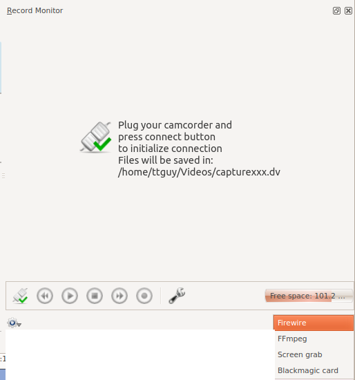
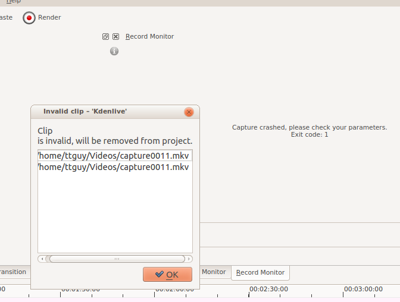

Capturing Video¶
Note
At least Firewire and webcam capture were removed in porting to KDE 5 due to lack of manpower.
Kdenlive provides functionality for capturing video from external devices; e.g., Firewire, FFmpeg, Screen Grab and Blackmagic.
You configure video capturing from (more on this Configure Kdenlive).
You define the destination location for your captures by using (more on this Configure Kdenlive).
To execute a video capture, select the Monitors and choose the capture device from the dropdown in the bottom right.
{kind=link}
Firewire¶
This option is not available in recent versions of Kdenlive. Use dvgrab directly in a terminal to capture video from firewire.
This captures video from sources connected via a firewire (also known as - IEEE 1394 High Speed Serial Bus) card and cable. This functionality uses the dvgrab program and the settings for this can be customized by clicking the spanner icon or choosing . See Configure Kdenlive.
To perform a capture:
Plug in your device to the firewire card and turn it on to play mode
Click the Connect Button
Click the Record Button – note it toggles to grey while you are recording
Click the Record button again to stop capture. Or click the stop button.
Once capturing is finished, click the disconnect button
In the Captured Files dialog, click the import button to have the captured files automatically imported into the project bin.
Note
If your device does not start playing the source device when you click the record button, you may have to start playback on your device manually and then click record.
FFmpeg¶
I believe this captures video from an installed Web Cam using Video4Linux2.
Screen Grab¶
This captures video of the PC screen. In version 0.9.2 it uses recordMyDesktop to do the capture. There is an open defect with this functionality in ver 0.9.2 – See bug tracker ID 2643.
In version 0.9.3, the screen grab is done by the ffmpeg functionality instead. For screen capture to work in ver 0.9.3, the version of ffmpeg installed needs to have been compiled with the --enable-x11grab option. Ubuntu comes with an ffmpeg version compiled with this option.
To check on your linux distro, type ffmpeg -version in a terminal and look for --enable-x11grab in the reported configuration info. 1
If you are capturing the screen and using the X246 with audio settings and you get a crash as shown in the screen shot…
…then consider creating a profile for audio capture where -acodec pcm_s16le is replaced by -acodec libvorbis -b 320k. See Configure Kdenlive.
Blackmagic¶
This is for capturing from Blackmagics decklink video capture cards (AFAIK). Not sure how stable this code is at the moment. See defect 2130.
Footnotes¶
- 1
There are now two branches of ffmpeg: a Libav branch and an ffmpeg.org branch. The ffmpeg version from the latter branch reports the configuration when you run with
ffmpeg -version. The Libav version does not. So this method to check for the--enable-x11grabdoes not work if you have the Libav version of ffmpeg.